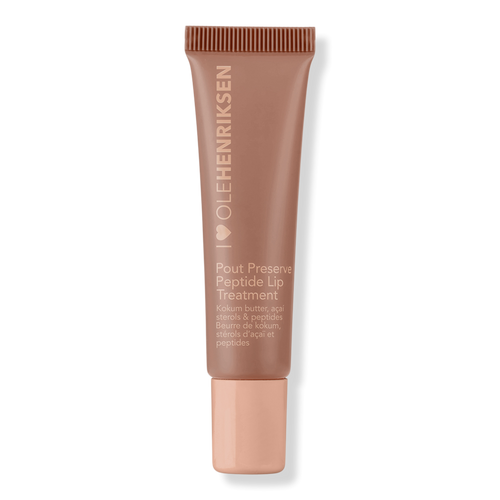

.𖥔 ݁ ˖ My Lip Balm ۫ ׅ ✧

For the past three years, this lip balm has been a saving grace for the cold weather. Especially coming from
Hong Kong where humidity is usually in the high 70's to 80's, I don't think I would've made it in the New York
harsh winters without this lip balm. That being said the fact that there are two on my desk currently is cause
for concern, and an upsetting indicator that winter is approaching. Although, this year I have two lip balms,
so I'm more than ready (no I am not).
⠀⠀⠀. . ﾟ . . ✦ , .
⠀⠀⠀⠀⠀⠀⠀⠀⠀⠀⠀⠀⠀⠀⠀⠀⠀ * .
. . ✦⠀ , * ⠀ ⠀ ⠀⠀⠀⠀⠀⠀⠀⠀⠀⠀⠀⠀. ⠀ ⠀. .
*⠀ ⠀ ⠀✦⠀ * .
. . ⠀ . . . .
˚ ﾟ . .⠀ ⠀⠀⠀⠀⠀⠀⠀⠀⠀⠀⠀, ✦⠀ ˚ ﾟ .
.⠀ ⠀⠀⠀⠀⠀⠀⠀⠀⠀⠀⠀, * ⠀. . ⠀✦ ˚ *.⠀ . .
✦⠀ , .⠀⠀⠀⠀⠀⠀. ⠀⠀⠀✦ ⠀ ⠀ ⠀⠀⠀⠀⠀* ⠀⠀⠀.
* .. . ✦⠀ , *
⠀ ⠀ ,⠀⠀⠀⠀⠀⠀⠀⠀⠀⠀⠀⠀. ⠀ ⠀. ˚ ⠀ ⠀ , . . *⠀